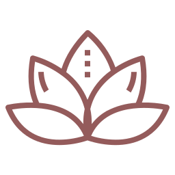
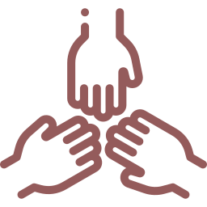

Hola! soy Sabrina Luna, y quiero contarles cómo el Yoga y el Reiki mejoraron mi calidad de vida y me ayudaron a crecer personalmente.
Comencé Yoga hace varios años, luego me formé como maestra en Reiki Usui y descubrí que día a día me sentía más plena y en calma conmigo misma. Hoy, en agradecimiento a estas prácticas, quiero acercar sus beneficios a todos ustedes.
El Reiki me ayuda a ver las cosas con amor teniendo los pies en la tierra, y el Yoga genera fuerza, resistencia y perseverancia dentro de mi. Creo fielmente que ambos métodos nos servirán entonces como puente para una completa autorrealización.
Hoy, gracias a todo el trabajo en equipo, la dedicación y el esmero, se materializó YogaLuna. Y continúa gracias a todos ustedes que me acompañan ¡en cada práctica, y en cada encuentro!
Muchas gracias a las siguientes asociaciones internacionales que avalan y respaldan mi formación y profesionalización tanto en Yoga como en Reiki Usui.